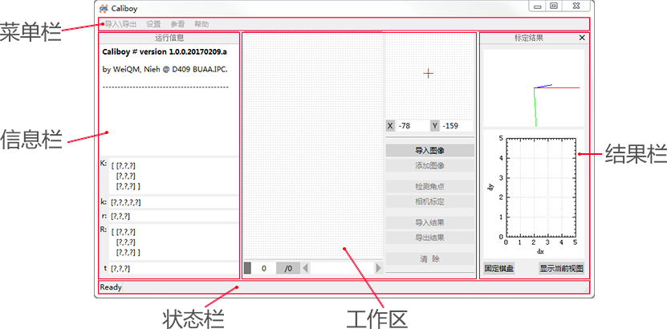
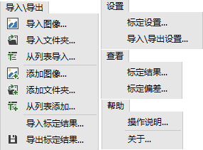

- 2.0.0.201803
Version 2.0.0.201803.
Based on Qt, OpenCV and OpenGL.
Developed and designed by WeiQM, Nieh @ BUAA.IPC.
标定程序界面由菜单栏、信息栏、状态栏、工作区及结果栏等区域构成.

菜单栏包含导入\导出、设置、查看及帮助等菜单组.

导入\导出
选择多张图像导入,之前图像将被移除. |
|
选择文件夹,导入其中识别格式图像,之前图像将被移除.不包含子文件夹中内容. |
|
根据文本列表内容导入图像. |
|
选择多张图像添加,不移除之前图像. |
|
选择文件夹,添加其中识别格式图像,不移除之前图像.不包含子文件夹中内容. |
|
根据文本列表内容添加图像. |
|
导入已保存的标定结果. |
|
导出标定结果. |
设置
设置标定参数. |
|
设置导入\导出标定结果的内容. |
查看
打开标定结果显示栏进行查看. |
|
查看标定偏差统计结果. |
帮助
操作说明 |
打开本操作说明. |
关于 |
打开[关于Caliboy]对话框. |
工作区用于显示导入图像以及进行角点检测和相机标定的操作.
操作按钮
执行导入图像操作. |
|
执行添加图像操作. |
|
拾取4个内部边界角点以自动检测所有网格角点,含边界角点. |
|
根据检测角点标定相机. |
|
导入已保存的标定结果. |
|
导出标定结果. |
|
清除 |
移除工作环境图像,清除数据. |
显示操作运行信息及相机和视图标定结果.
相机和视图参数
K |
相机内部参数矩阵,含像素焦距及主点位置信息. |
k |
畸变参数:[k1,k2,p1,p2,k3]. |
r |
旋转向量,R的Rodrigues变换. |
R |
旋转矩阵,r的Rodrigues变换. |
t |
平移向量. |
显示标定结果.